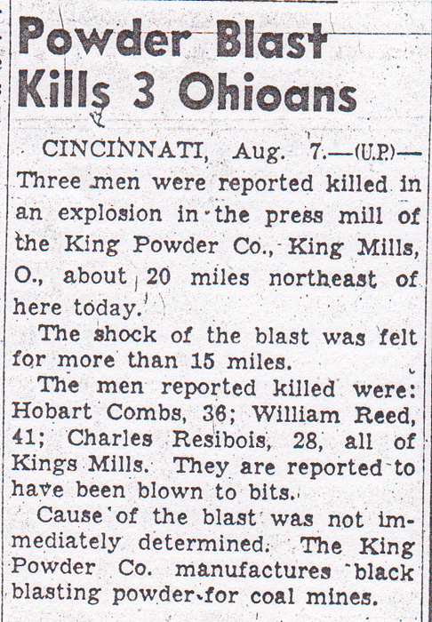
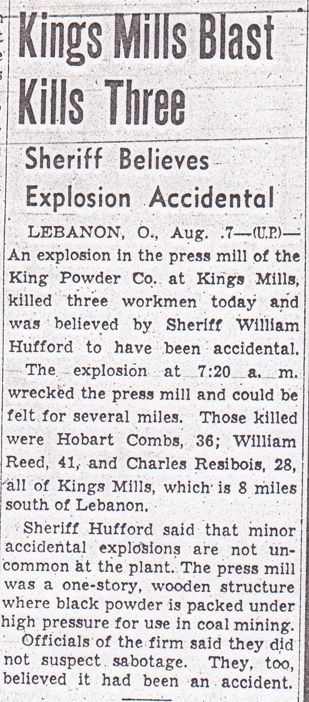
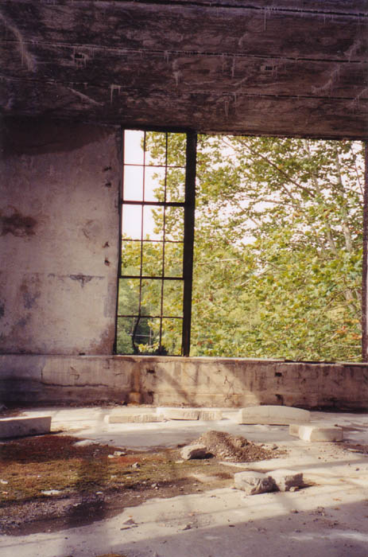
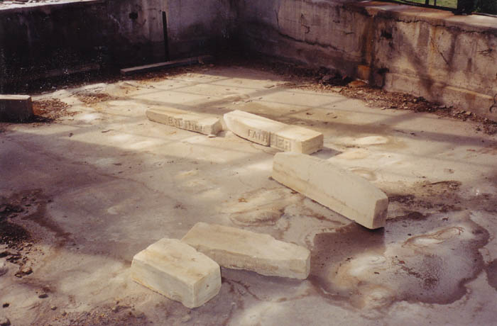
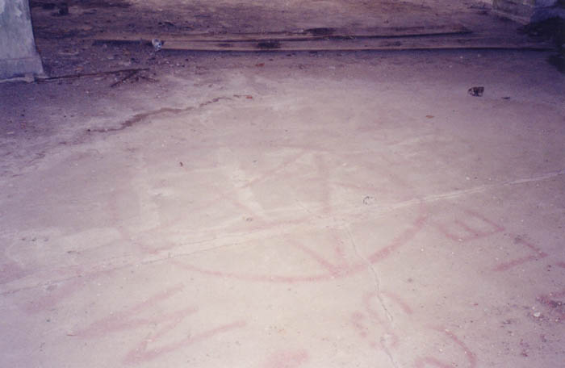
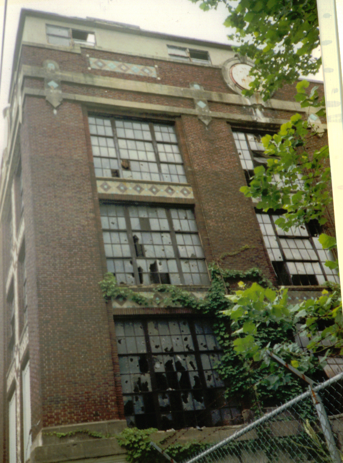
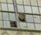

Not surprisingly, the Peters Cartridge Co. building is supposed to be haunted. In this case there appears to be some validity to the stories behind the ghosts. There were probably hundreds of industrial accidents during the time that the powder plant was in operation; anytime you're working with explosives, that sort of thing is going to happen, and in the days before labor unions and OSHA it was definitely more of a problem. The articles below are taken from August, 1940 editions of the Columbus Citizen-Journal and Ohio State Journal respectively. They detail the deaths of three men at the plant.


During our time at the factory we never encountered anything supernatural, but I've spoken to several people who have. Apparently footsteps cross the upper floors and the roof late at night, and the elevator cables sometimes shake for no good reason. Ghosts occasionally appear in the upper windows and are sighted by people driving by or bikers on the Little Miami trail.

Above you can see one of the truly weird things we came across in the main building: gravestones arranged in a circle at one end of the second floor.

The gravestones are all family plot stones that just say FATHER or MOTHER or BROTHER. They were apparently broken off in some cemetery and brought here. Very creepy.
Well, creepy until you find out the truth, anyway. According to numerous reports I've gotten, the stones are replicas made by the artist who occupies one wing of the complex. He left them here for a photographic shoot. I've also heard that one of the film productions that have used the place may have left them here. Either way, they're not as sinister as they might seem at first glance.

Nearby somebody had spraypainted a red pentagram on the floor. Just kids, or cult members? It's hard to say, but the police seem to take the cult thing quite seriously.
As for ghosts, you can judge for yourself, but it's indisputable that many people lost their lives here in industrial accidents of all kinds. One story I was told by an anonymous contributor involved hearing the distinct sound of footsteps running across the roof of the main building, and following them to the stairwell at one end, only to find no one there--but the cables for the elevator were swinging, as if someone or something had just slid down.

This picture may contain a ghost. The person who contributed it to the website enlarged the missing pane of glass through which he spotted what looks like a human face. Here's what he was able to bring up:

It's a pretty chilling sight, but whether it convinces you of a spiritual presence at the old factory is entirely up to you. Click below to explore other facets of the powder plant.
Main Page
. . . . .
Main Floors
. . . . .
Grounds + Outbuildings
. . . . .
Roof + Tower
. . . . .
Basement + Tunnels
Back